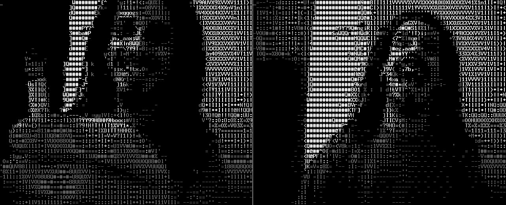
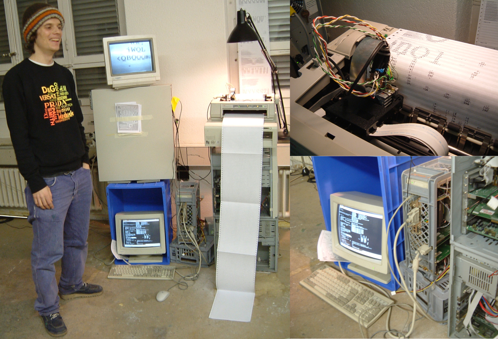

Hasciicam is ASCII for the masses
Hasciicam makes it possible to have live ascii video on the web!

Hasciicam captures video from a tv card and renders it into ascii, formatting the output into an html page with a refresh tag or in a live ascii window or in a simple text file as well, giving the possiblity to anybody that has a bttv card. a linux box and a cheap modem line to show a live asciivideo feed that can be browsable without any need for plugin, java etc.
- HTML screenshots featuring chmod & thing.net
- Portrait of Wolfgang Staehle (2001)
- Portrait of Richard M. Stallman (2002)
Swiss artist installation using hasciicam and printers (2015) 
Installation
On Debian and Ubuntu you have hasciicam packages ready to install
sudo apt-get install hasciicam
On RedHat and derivatives a package may be available too.
Usage
This software is operated from a terminal... and invites you to enjoy
the aesthetics of it :^)
To have a brief list of command line options, use:
hasciicam -h
To see the manual:
man hasciicam
Build from source
If you want to compile hasciicam from its source code, you will need
aalib: that's the great lib that makes possible ascii rendering if
your distribution does'nt includes it, you can fetch it from the
hasciicam webpage.
To compile the sourcecode:
autoreconf -i && ./configure && make
and to install it, you can use
make install
Running it:
people reported success with several pci and usb devices, refer to video4linux documentation for further informations
Internals
Hasciicam is written in plain C and is operated via command line, it comes with a comfortable help ( -h option ) and a manual page.
Hasciicam grabs video using Video4Linux2 api: grabs YUV420 and uses the luminance component to obtain a grayscale frame, then renders each frame into (h)ascii using the AA-lib engine, armoring it in an html with a refresh tag.
Ftp push technology is supported, to publish your hascii feed on your online webserver: that is implemented using a simple C code which wraps execution of your unix ftp client.
HasciiCam is written in C and should be portable to various operating systems besides GNU/Linux, still you are strongly advised (is good for your karma) to use it on free GNU systems - and smoke a spliff sometimes.
Credits
Hasciicam is a RASTASOFT producton by Denis "Jaromil" Roio
R A S T A | |
|
while ( love & passion ) { for( fight = 0 ; rights < freedom ; rights++ ) fight = standup( rights ); free( babylon ); } |
|
S O F T W A R E | |
People who contributed to the hasciicam project:
- jan hubicka and the aa-project crew - the ASCII rendering library
- gerd knorr - grab was inspired by his webcam sourcecode
- mathop aka josto - help on css with style
- august black - hacks for iomegabuz
- boffh - hacks for usb cams
- martin guy - karma to avoid buffer overflows
- rat - text dump
- pbm & megabug - watching ascii horizons
- rapid - security and bugfixes
- alessandro preite martinez - SGI Irix support (0.9)
- thomas pfau - ftp library
- blended - wider webcam support
- dan stowell - v4l2 api support
Special thanks to:
- LOA hacklab milano for donating a pentium100mhz development box
- hell voyager for donating an hauppage bttv brooktree card which made it possible to have releases :) )
- acme + rasty + martinez for very good vibez!
- servus.at, maddler.net, flyinglinux.net, autistici.org high quality bandwidth lets people get slashdotted!
- FREAKNET medialab catania :: for knowledge, place, sun and connectivity under the vulcano!
License
Hasciicam is Copyright (C) 2001-2019 by Dyne.org foundation
This source code is free software; you can redistribute it and/or modify it under the terms of the GNU Public License as published by the Free Software Foundation; either version 2 of the License, or (at your option) any later version.
This source code is distributed in the hope that it will be useful, but WITHOUT ANY WARRANTY; without even the implied warranty of MERCHANTABILITY or FITNESS FOR A PARTICULAR PURPOSE. Please refer to the GNU Public License for more details.
You should have received a copy of the GNU Public License along with this source code; if not, write to: Free Software Foundation, Inc., 675 Mass Ave, Cambridge, MA 02139, USA.